Depth Measure: Gini Coefficient and Lorenz Curve
The first thing we do is loading the required libraries.
library(ineq)The Gini coefficient was developed to measure the degree of concentration (inequality) of a variable in a distribution of its elements.
Example 1
We are going to consider the AirPassengers dataset. It consists of the time series recording of the montly total of passengers of an international airline, collected from 1949 to 1960.
AirPassengers## Jan Feb Mar Apr May Jun Jul Aug Sep Oct Nov Dec
## 1949 112 118 132 129 121 135 148 148 136 119 104 118
## 1950 115 126 141 135 125 149 170 170 158 133 114 140
## 1951 145 150 178 163 172 178 199 199 184 162 146 166
## 1952 171 180 193 181 183 218 230 242 209 191 172 194
## 1953 196 196 236 235 229 243 264 272 237 211 180 201
## 1954 204 188 235 227 234 264 302 293 259 229 203 229
## 1955 242 233 267 269 270 315 364 347 312 274 237 278
## 1956 284 277 317 313 318 374 413 405 355 306 271 306
## 1957 315 301 356 348 355 422 465 467 404 347 305 336
## 1958 340 318 362 348 363 435 491 505 404 359 310 337
## 1959 360 342 406 396 420 472 548 559 463 407 362 405
## 1960 417 391 419 461 472 535 622 606 508 461 390 432Overall Gini
We compute the overall Gini index.
ineq(AirPassengers, type = "Gini")## [1] 0.2407563We plot the results.
plot(Lc(AirPassengers), col = "darkred", lwd = 2)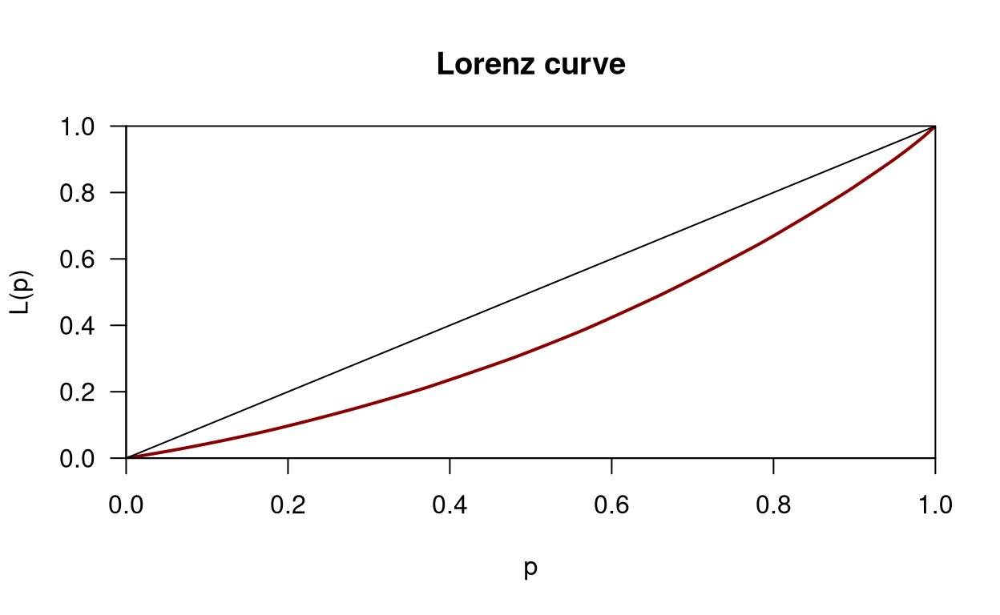
Concentration curves per year
We now consider the concentration curvers per year.
year49 <- AirPassengers[1:12]
plot(Lc(year49, plot = T), col = 1)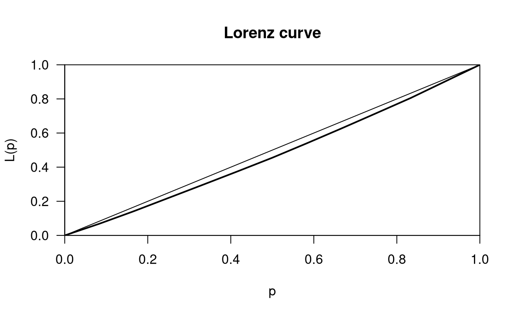
for (i in 1:11) {
lines(Lc(AirPassengers[(i * 12 + 1):(i * 12 + 12)]), col = i + 1)
}
abline(0, 1, lwd = 2)
They all look very similar, but some years are closer to having an equal number of passengers per month.
Gini index per year
We compute the Gini index per year.
YGini <- c()
for (i in 0:11) {
YGini <- c(YGini, ineq(AirPassengers[(i * 12 + 1):(i * 12 + 12)], type = "Gini"))
}
year <- 1949:1960
(YGini <- data.frame(Gini.Index = YGini, row.names = year))attach(YGini)The maximum and the minimum are:
year[which(Gini.Index == min(Gini.Index))]## [1] 1949year[which(Gini.Index == max(Gini.Index))]## [1] 1958We plot the index.
plot(year, Gini.Index, main = "Gini Index per Year", xlab = "year", ylab = "Gini Index")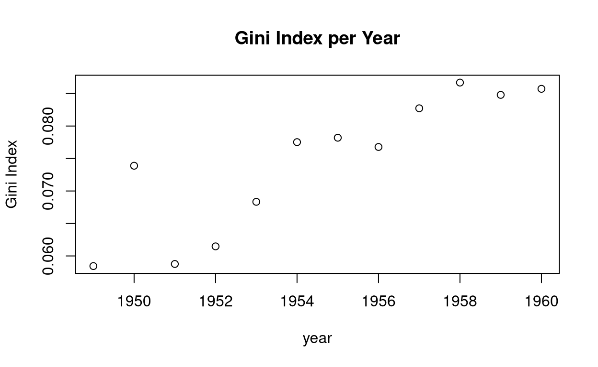
It looks like concentration is increasing.
And we detach the data.
detach(YGini)Example 2
We are now going to consider income metadata from surveys conducted by the National Statistics Office of the Philippines. The data containes household income and metadata in one of the sixteen regions of the Philippines called Ilocos. The data comes from two of the NSO’s surveys: 1997’s “Family and Income and Expenditure Survey” and 1998’s “Annual Poverty Indicators Survey” (APIS). Since APIS has only a six month reference period, the original data were rescaled using an adjustment factor derived from the quarterly GDP figures that can be obtained for the major sectors.
data(Ilocos)
attach(Ilocos)We extract and rescale income for the provinces “Pangasinan” and “La Union”.
income.p <- income[province == "Pangasinan"] / 10000
income.u <- income[province == "La Union"] / 10000We compute the Lorenz curves.
Lc.p <- Lc(income.p)
Lc.u <- Lc(income.u)We plot both curves.
plot(Lc.p)
lines(Lc.u, col = 2)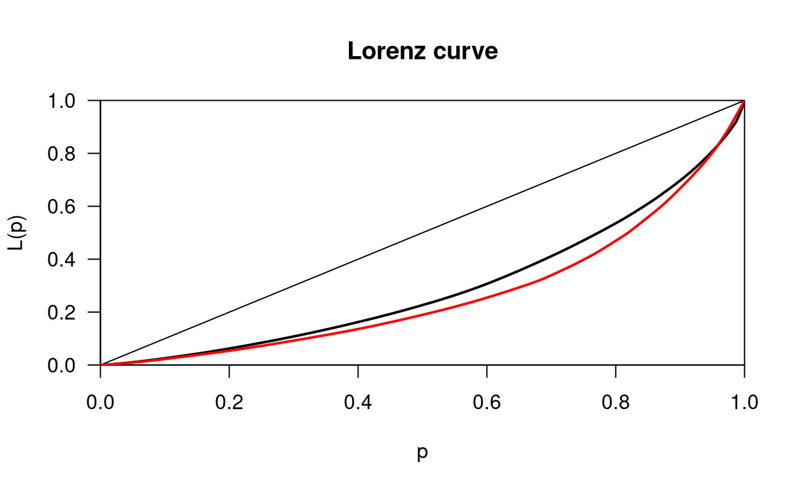
Example 3
In this example, we simulate data to get some feeling for the Lorenz curve and Gini Index obtained from different distributions, one of which is very skewed.
We set the seed for replicability and set the sample size.
set.seed(050218)
n <- 100000First Distribution
We simulate the normal distribution and check if everything went alright.
sdat <- rnorm(n, 0, 1)
hist(sdat, breaks = "FD")
points(quantile(sdat, prob = seq(0, 1, .1)), rep(0, 11), col = "red", pch = 19) 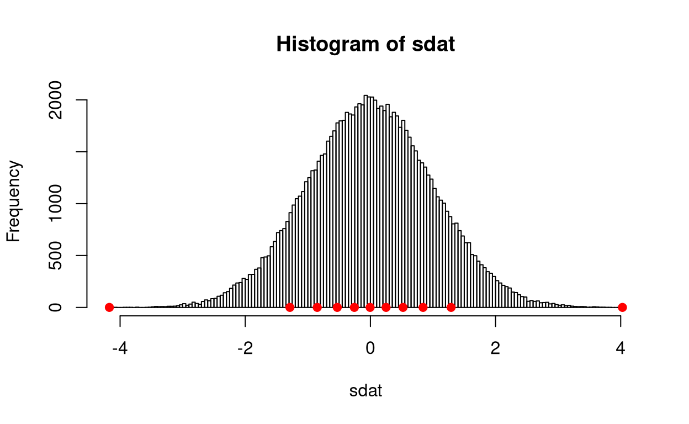
mean(sdat)## [1] -0.001899368median(sdat)## [1] -0.00450441Second Distribution
We simulate another distribution, taking the exponential of the previous values and then adding a drift term to stay away from \(0\). Taking the exponential will squeen the distribution in the interval \([0, 1]\) and dilate that of the positive values in \([0, + \infty]\). We then inspect the result.
inc <- exp(sdat)
inc <- inc + 10Let us see!
hist(inc, prob = T, breaks = "FD", xlim = c(0, max(inc)))
points(quantile(inc, prob = seq(0, 1, .1)), rep(0, 11), col = "red", pch = 19)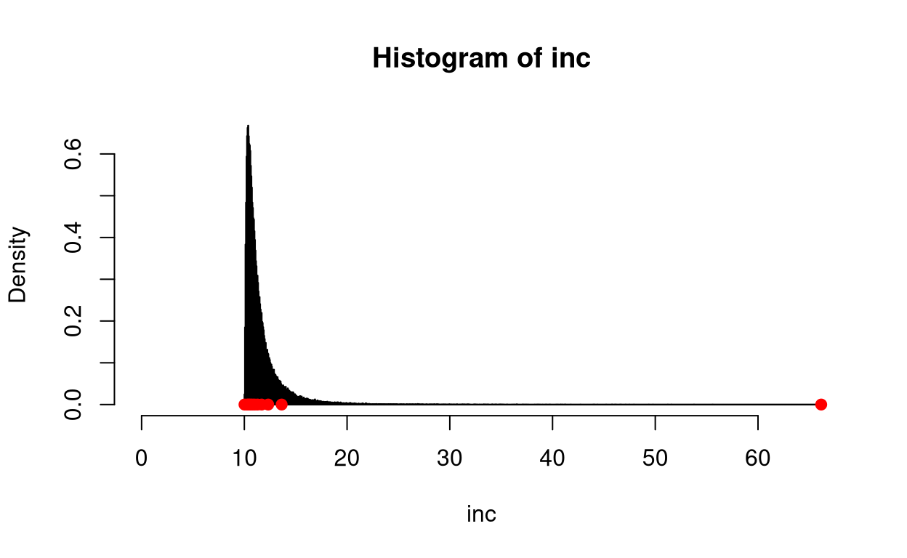
Let us see if everything went ok: we check if the quantiles of the gaussian distribution were mapped to the quantiles of the new distribution by checking the media.
median(inc)## [1] 10.99551median(inc) - (exp(median(sdat)) + 10)## [1] 5.185186e-12Also note that taking the inverse map, \(\log(\mathrm{inc} - 10)\)m the transformed data would have a Gaussian distribution.
Third distribution
Now we generate a sample of size \(n\): we want a Gaussian with the same mean and standard deviation as the second distribution.
mean(inc)## [1] 11.6536sd(inc)## [1] 2.152738norm.inc <- rnorm(n, mean = mean(inc), sd = sd(inc))We check the result.
hist(inc, prob = T, breaks = "FD", xlim = c(0, max(inc))) # plot a representation of the two distributions
x <- seq(mean(norm.inc) - 4 * sd(norm.inc), mean(norm.inc) + 4 * sd(norm.inc), .01)
lines(x, dnorm(x, mean = mean(norm.inc), sd = sd(norm.inc)), type = "l", col = "blue")
legend(40, 0.5, c("inc", "norm.inc"), lwd = 1, col = c("black", "blue"))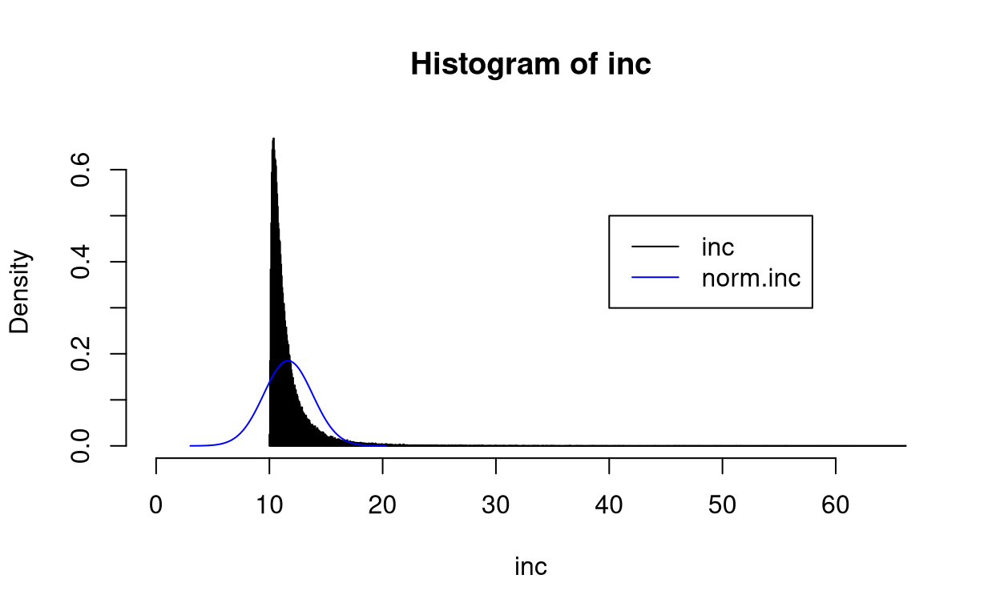
If inc and norm.inc were incomes the total income for the two populations would almost be the same.
sum(inc)## [1] 1165360sum(norm.inc)## [1] 1165170Why? Same means, same sample sizes!
Analysis
So, which population has a higher income concentration?
plot(Lc(inc), main = "Lorenz curve of inc")
lines(Lc(norm.inc), col = "blue")
legend(.05, .9, c("inc", "norm.inc"), lwd = 1, col = c("black", "blue"))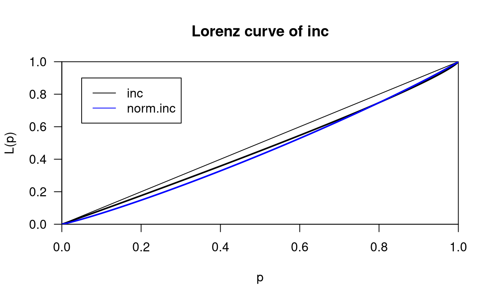
Even though the distribution of inc has a much longer right tail (“richest people are much reacher!”), for the poorest 80% it has a smaller concentration than what you would expect if the distribution were a Gaussian with same mean and standard deviation.
inc.Gini <- ineq(inc, type = "Gini")
norm.inc.Gini <- ineq(norm.inc, type = "Gini")
sGini <- data.frame(c(inc.Gini, norm.inc.Gini), row.names = c("inc", "norm.inc"), check.names = F)
sGini <- rbind(inc = inc.Gini, norm.inc = norm.inc.Gini)
dimnames(sGini)[[2]] <- c("Gini Index")
sGini## Gini Index
## inc 0.07422575
## norm.inc 0.10449455Overall the Gaussian has a higher concentration index.
Uniform sample
Consider now a sample from a uniform distribution, with the same mean and standard deviation as in.
uni.inc <- runif(n, min = mean(inc) - sqrt(3) * sd(inc), max = mean(inc) + sqrt(3) * sd(inc))
mean(uni.inc) - mean(inc)## [1] -0.005466781sd(uni.inc) / sd(inc)## [1] 1.000182We plot the three histograms.
hist(inc, prob = T, breaks = "FD", xlim = c(0, max(inc))) # plot a representation of the three distributions
x <- seq(mean(norm.inc) - 4 * sd(norm.inc), mean(norm.inc) + 4 * sd(norm.inc), .01)
lines(x, dnorm(x, mean = mean(norm.inc), sd = sd(norm.inc)), type = "l", col = "blue")
x <- seq(mean(inc) - sqrt(3) * sd(inc), mean(inc) + sqrt(3) * sd(inc), 0.1)
lines(x, dunif(x, mean(inc) - sqrt(3) * sd(inc), mean(inc) + sqrt(3) * sd(inc)), col = "green")
legend(40, 0.5, c("inc", "norm.inc", "uni.inc"), lwd = 1, col = c("black", "blue", "green"))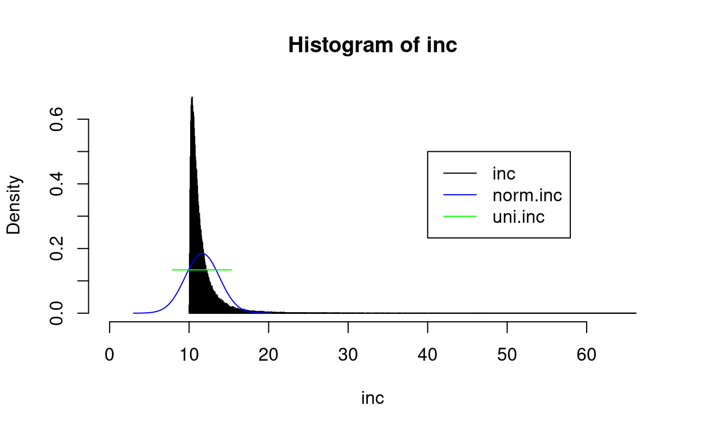
In which population is income more concentrated?
plot(Lc(inc), main = "Lorenz curve of inc")
lines(Lc(norm.inc), col = "blue")
lines(Lc(uni.inc), col = "darkgreen")
legend(.05, .9, c("inc", "norm.inc", "uni.inc"), lwd = 1, col = c("black", "blue", "darkgreen"))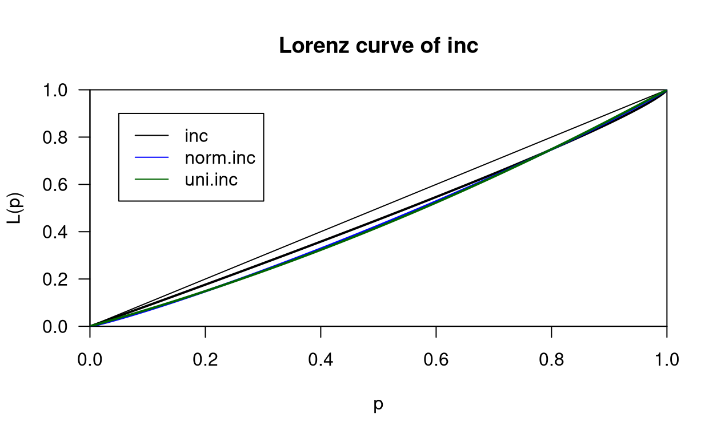
Uniform with larger variance
Things change if we consider a uniform distribution with the same mean but a larger variance.
uni2.inc <- runif(n, min = mean(inc) - 2 * sqrt(3) * sd(inc), max = mean(inc) + 2 * sqrt(3) * sd(inc))Check the differences!
mean(uni2.inc) - mean(inc) # to be sure, check the differences## [1] -0.01206113sd(uni2.inc) / sd(inc)## [1] 1.997261We plot the Lorenz curves!
plot(Lc(inc), main = "Lorenz curve of inc")
lines(Lc(norm.inc), col = "blue")
lines(Lc(uni.inc), col = "darkgreen")
lines(Lc(uni2.inc), col = "lightgreen")
legend(.05, .9, c("inc", "norm.inc", "uni.inc", "uni2.inc"), lwd = 1, col = c("black", "blue", "darkgreen", "lightgreen"))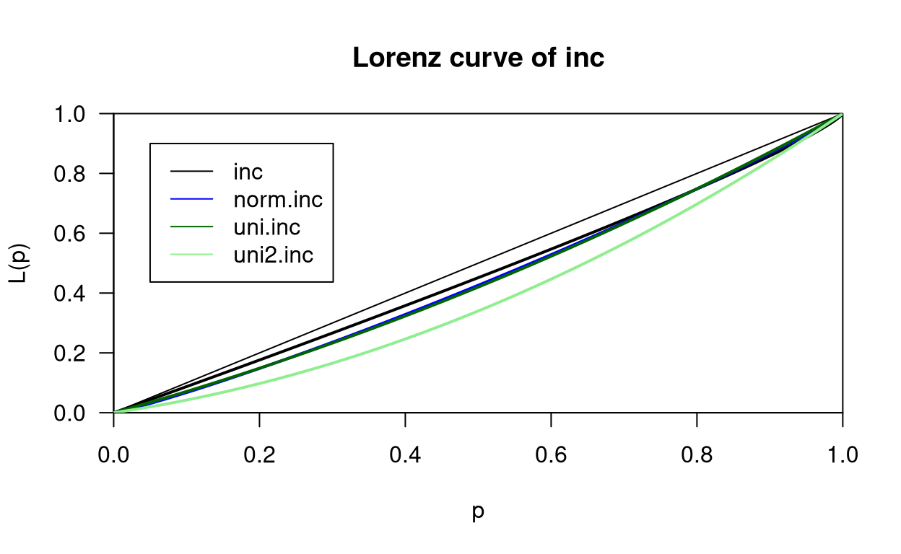
Let us look at the Gini indices.
uni.inc.Gini <- ineq(uni.inc, type = "Gini")
uni2.inc.Gini <- ineq(uni2.inc, type = "Gini")
sGini <- rbind(sGini, uni.inc = uni.inc.Gini, uni2.inc = uni2.inc.Gini)
sGini## Gini Index
## inc 0.07422575
## norm.inc 0.10449455
## uni.inc 0.10672115
## uni2.inc 0.21323183Exponential
Finally, let’s consider an exponential distribution with the same mean as that of inc.
exp.inc <- rexp(n, rate = 1 / mean(inc))We make a histogram.
hist(inc, prob = T, breaks = "FD", xlim = c(0, max(inc))) # plot a representation of the four distribution distributions
x <- seq(mean(norm.inc) - 4 * sd(norm.inc), mean(norm.inc) + 4 * sd(norm.inc), .01)
lines(x, dnorm(x, mean = mean(norm.inc), sd = sd(norm.inc)), type = "l", col = "blue")
x <- seq(mean(inc) - sqrt(3) * sd(inc), mean(inc) + sqrt(3) * sd(inc), 0.1)
lines(x, dunif(x, mean(inc) - sqrt(3) * sd(inc), mean(inc) + sqrt(3) * sd(inc)), col = "green")
x <- seq(0, max(exp.inc), 0.01)
lines(x, dexp(x, rate = 1 / mean(inc)), col = "red")
legend(40, 0.5, c("inc", "norm.inc", "uni.inc", "exp.inc"), lwd = 1, col = c("black", "blue", "green", "red"))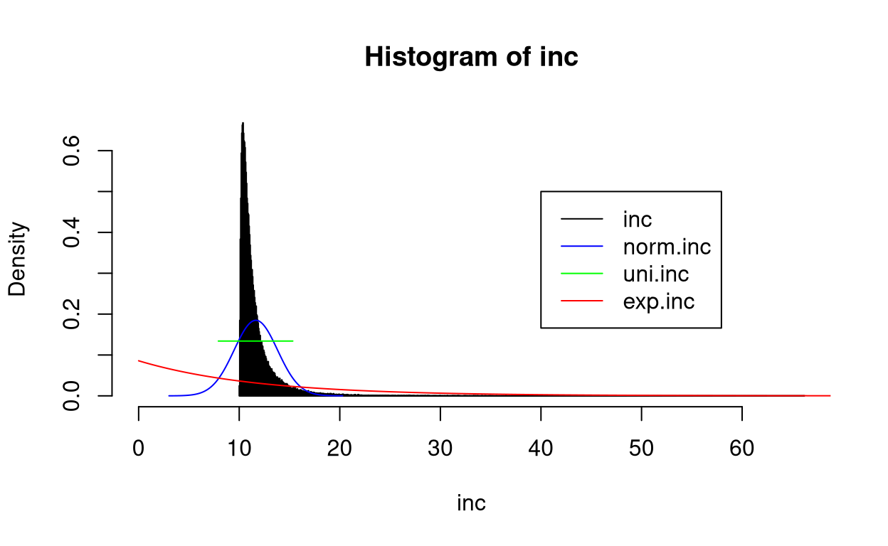
And once again compare total incomes.
sum(exp.inc)## [1] 1162785We plot the concentration curves.
plot(Lc(inc), main = "Lorenz curve of inc")
lines(Lc(norm.inc), col = "blue")
lines(Lc(uni.inc), col = "darkgreen")
lines(Lc(uni2.inc), col = "lightgreen")
lines(Lc(exp.inc), col = "red")
legend(.05, .9, c("inc", "norm.inc", "uni.inc", "uni2.inc", "exp.inc"), lwd = 1, col = c("black", "blue", "darkgreen", "lightgreen", "red"))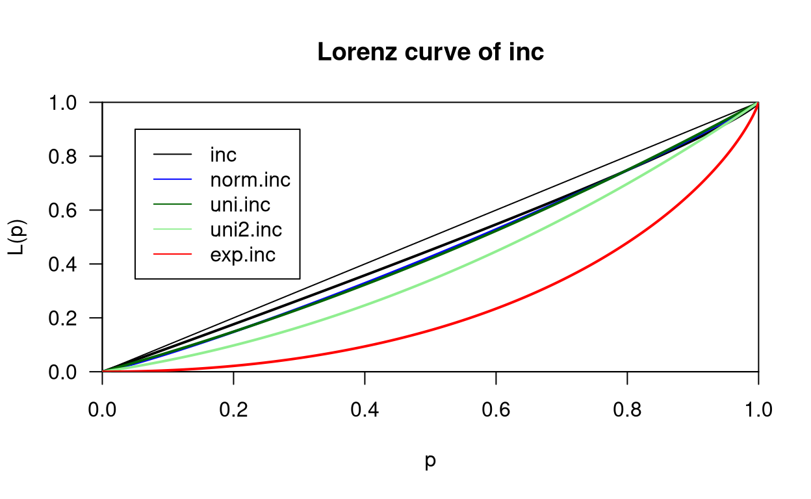
The exponential is much more concentrated! Let us have a look at Gini.
sGini <- rbind(sGini, exp.inc = ineq(exp.inc, type = "Gini"))
sGini## Gini Index
## inc 0.07422575
## norm.inc 0.10449455
## uni.inc 0.10672115
## uni2.inc 0.21323183
## exp.inc 0.49922765